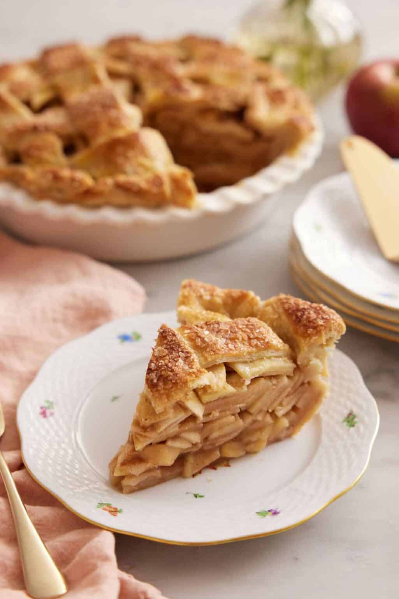
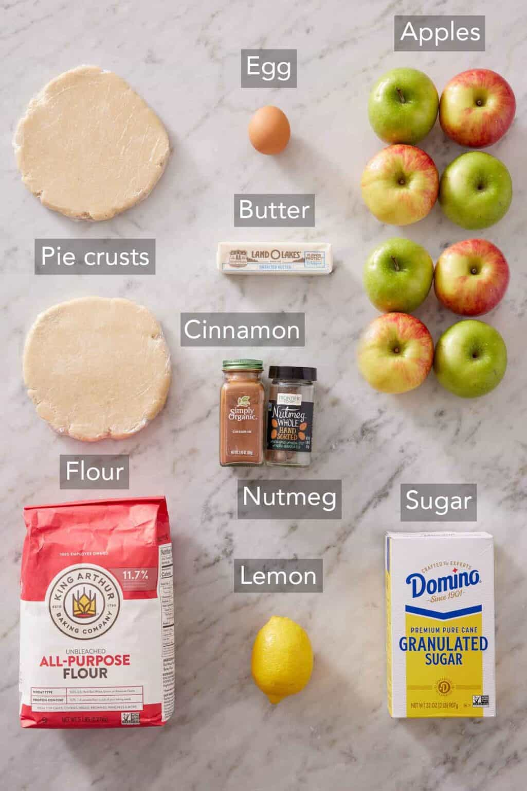

Apple Pie

A flaky and golden slice of apple pie, just the way your childhood remembers it.
A flaky, buttery pie crust generously filled with gently spiced apples alongside a big scoop of vanilla ice cream- it doesn’t get much more delicious than that. And this apple pie recipe is a festive, easy holiday dessert that’s perfect for fall!
Apple pie is an iconic American dessert. It’s ubiquitous on almost every holiday table because it is simply that popular, so much so that many families have their own take on an apple pie recipe.
Ingredients

- Apples
- Spices
- Pie Dough
- Butter